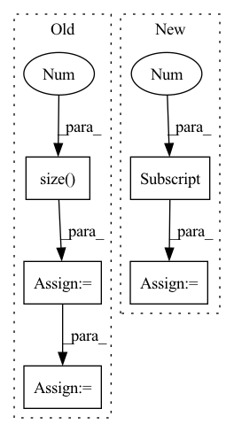

Pattern ID :802
Before Change
self.fc = nn.Linear(out_channels + num_layers * hidden_size, 1)
def forward(self, x):
batch_size = x.size(0 )
embedding = self.dropout(self.embed(x))
conv_in = embedding.permute(0, 2, 1)
conv_out = self.conv(conv_in)
values, indices = conv_out.max(dim=-1)
conv_out = conv_out.permute(2, 0, 1)
try:
_, (hidden, _) = self.rnn(conv_out)
except ValueError:
_, hidden = self.rnn(conv_out)
hidden = hidden.reshape(batch_size, -1)
fc_in = torch.cat((hidden, values), dim=-1)
output = self.fc(fc_in).squeeze(1)
return outputAfter Change
values, indices = conv_out.max(dim=-1)
conv_out = conv_out.permute(2, 0, 1)
rnn_out, _ = self.rnn(conv_out)
hidden = rnn_out[-1]
fc_in = torch.cat((hidden, values), dim=-1)
output = self.fc(fc_in).squeeze(1)
return output
In pattern: SUPERPATTERN
Frequency: 4
Non-data size: 5
Instances Fragment ID: 2899004
Project Name: jaketae/deep-malware-detection
Commit Name: f47900498ab32b4bde599d548ad57290443f0a8b
Time: 2020-11-27
Author: jaesungtae@gmail.com
File Name: models.py
M Class Name: ResRCNN
N Class Name: ResRCNN
M Method Name: forward(2)
N Method Name: forward(2)
M Parent Class: nn.Module
N Parent Class: nn.Module
M File Name: models.py
N File Name: models.py
M Start Line: 137
M End Line: 147
N Start Line: 142
N End Line: 143
Before Change
if isinstance(factor, (int, float)):
out = image * (self.c_table * factor)
else:
b = factor.size(0 )
table = self.c_table.expand(b, 1, 8, 8) * factor.view(b, 1, 1, 1)
out = image * table
return out
After Change
def forward(self, x: torch.Tensor, height: int, width: int) -> torch.Tensor:
k = 8
batch_size = x.shape[0]
x_reshaped = x.view(batch_size, height // k, width // k, k, k)
x_transposed = x_reshaped.permute(0, 1, 3, 2, 4)
out = x_transposed.contiguous().view(batch_size, height, width)
Fragment ID: 2898975
Project Name: lornatang/real_esrgan-pytorch
Commit Name: edfbb6820fc2084c2ffe132e9b64a348a323d1e7
Time: 2022-06-16
Author: liuchangyu1111@gmail.com
File Name: imgproc.py
M Class Name: CDequantize
N Class Name: _DeBlockSplitting
M Method Name: forward(4)
N Method Name: forward(3)
M Parent Class: nn.Module
N Parent Class: nn.Module
M File Name: imgproc.py
N File Name: imgproc.py
M Start Line: 1698
M End Line: 1711
N Start Line: 1374
N End Line: 1379
Before Change
self.fc = nn.Linear(num_layers * hidden_size, 1)
def forward(self, x):
batch_size = x.size(0 )
embedding = self.dropout(self.embed(x))
conv_in = embedding.permute(0, 2, 1)
conv_out = self.conv(conv_in)
conv_out = conv_out.permute(2, 0, 1)
try:
_, (hidden, _) = self.rnn(conv_out)
except ValueError:
_, hidden = self.rnn(conv_out)
hidden = hidden.reshape(batch_size, -1)
output = self.fc(hidden).squeeze(1)
return output
After Change
conv_out = self.conv(conv_in)
conv_out = conv_out.permute(2, 0, 1)
rnn_out, _ = self.rnn(conv_out)
hidden = rnn_out[-1]
output = self.fc(hidden).squeeze(1)
return output
Fragment ID: 2899001
Project Name: jaketae/deep-malware-detection
Commit Name: f47900498ab32b4bde599d548ad57290443f0a8b
Time: 2020-11-27
Author: jaesungtae@gmail.com
File Name: models.py
M Class Name: RCNN
N Class Name: RCNN
M Method Name: forward(2)
N Method Name: forward(2)
M Parent Class: nn.Module
N Parent Class: nn.Module
M File Name: models.py
N File Name: models.py
M Start Line: 92
M End Line: 101
N Start Line: 96
N End Line: 97
Before Change
// them together.
if not mems: mems = self.init_mems()
tgt_len = target.size(0 )
hidden, new_mems = self._forward(data, mems=mems)
pred_hid = hidden[-tgt_len:]
parser = argparse.ArgumentParser(description="unit test")
After Change
// happening. We can instead just take the hidden output and push it to the
// 2 MLP which are learning the policy
// pred_hid = hidden[-tgt_len:]
pred_hid = hidden[-1]
// TODO : Check if this should be -1 or the entire hidden itself?
// TODO : Jerrod : NEED TO CHANGE THIS (ADD MLP that maps to correct // actions
// TODO : Shakti : I dont think so since this output will be succeeded by 2 MLPs in Fragment ID: 2899003
Project Name: jerrodparker20/adaptive-transformers-in-rl
Commit Name: 333fad51ae6344cec5ac341e6f304f40fcb028f5
Time: 2020-03-11
Author: shakti.shrivastava13@gmail.com
File Name: StableTransformersReplication/transformer_xl.py
M Class Name: MemTransformerLM
N Class Name: MemTransformerLM
M Method Name: forward(2)
N Method Name: forward(2)
M Parent Class: nn.Module
N Parent Class: nn.Module
M File Name: StableTransformersReplication/transformer_xl.py
N File Name: StableTransformersReplication/transformer_xl.py
M Start Line: 464
M End Line: 467
N Start Line: 485
N End Line: 493